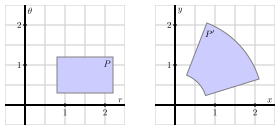

Section 12.8 Change of Variables
In single variable calculus, we encountered the idea of a change of variable in a definite integral through the method of substitution. For example, given the definite integral
\begin{equation*}
\int_0^2 2x(x^2+1)^3 \, dx,
\end{equation*}
we naturally consider the change of variable \(u = x^2+1\text{.}\) From this substitution, it follows that \(du = 2x \, dx\text{,}\) and since \(x = 0\) implies \(u = 1\) and \(x = 2\) implies \(u = 5\text{,}\) we have transformed the original integral in \(x\) into a new integral in \(u\text{.}\) In particular,
\begin{equation*}
\int_0^2 2x(x^2+1)^3 \, dx = \int_1^5 u^3 \, du.
\end{equation*}
Through our work with polar, cylindrical, and spherical coordinates, we have already implicitly seen some of the issues that arise in using a change of variables with two or three variables present. In what follows, we seek to understand the general ideas behind any change of variables in a multiple integral.
Preview Activity 12.8.1.
Consider the double integral
\begin{equation}
I = \iint_D x^2+y^2 \, dA,\tag{12.8.1}
\end{equation}
where \(D\) is the upper half of the unit disk.
-
-
When we write the double integral (12.8.1) as an iterated integral in polar coordinates we make a change of variables, namely\begin{equation} x = r \cos(\theta) \ \ \ \ \ \text{ and } \ \ \ \ \ y = r \sin(\theta).\tag{12.8.2} \end{equation}We also then have to change \(dA\) to \(r \, dr \, d\theta\text{.}\) This process also identifies a polar rectangle \([r_1, r_2] \times [\theta_1, \theta_2]\) with the original Cartesian rectangle, under the transformationin Equation (12.8.2). The vertices of the polar rectangle are transformed into the vertices of a closed and bounded region in rectangular coordinates.
1
A transformation is another name for function: here, the equations \(x = r\cos(\theta)\) and \(y = r\sin(\theta)\) define a function \(T\) by \(T(r, \theta) = (r\cos(\theta), r\sin(\theta))\) so that \(T\) is a function (transformation) from \(\R^2\) to \(\R^2\text{.}\) We view this transformation as mapping a version of the \(xy\)-plane where the axes are viewed as representing \(r\) and \(\theta\) (the \(r \theta\)-plane) to the familiar \(xy\)-plane.To work with a numerical example, lets now consider the polar rectangle \(P\) given by \([1, 2] \times [\frac{\pi}{6}, \frac{\pi}{4}]\text{,}\) so that \(r_1 = 1\text{,}\) \(r_2=2\text{,}\) \(\theta_1 = \frac{\pi}{6}\text{,}\) and \(\theta_2 = \frac{\pi}{4}\text{.}\)-
Use the transformation determined by the equations in(12.8.2) to find the rectangular vertices that correspond to the polar vertices in the polar rectangle \(P\text{.}\) In other words, by substituting appropriate values of \(r\) and \(\theta\) into the two equations in(12.8.2), find the values of the corresponding \(x\) and \(y\) coordinates for the vertices of the polar rectangle \(P\text{.}\) Label the point that corresponds to the polar vertex \((r_1, \theta_1)\) as \((x_1, y_1)\text{,}\) the point corresponding to the polar vertex \((r_2, \theta_1)\) as \((x_2, y_2)\text{,}\) the point corresponding to the polar vertex \((r_1, \theta_2)\) as \((x_3, y_3)\text{,}\) and the point corresponding to the polar vertex \((r_2, \theta_2)\) as \((x_4, y_4)\text{.}\)
-
Draw a picture of the figure in rectangular coordinates that has the points \((x_1,y_1)\text{,}\) \((x_2,y_2)\text{,}\) \((x_3, y_3)\text{,}\) and \((x_4,y_4)\) as vertices. (Note carefully that because of the trigonometric functions in the transformation, this region will not look like a Cartesian rectangle.) What is the area of this region in rectangular coordinates? How does this area compare to the area of the original polar rectangle?
-
Subsection 12.8.1 Change of Variables in Polar Coordinates
The general idea behind a change of variables is suggested by Preview Activity12.8.1. There, we saw that in a change of variables from rectangular coordinates to polar coordinates, a polar rectangle \([r_1, r_2] \times [\theta_1, \theta_2]\) gets mapped to a Cartesian rectangle under the transformation
\begin{equation*}
x = r \cos(\theta) \ \ \ \ \ \text{ and } \ \ \ \ \ y = r \sin(\theta).
\end{equation*}
The vertices of the polar rectangle \(P\) are transformed into the vertices of a closed and bounded region \(P'\) in rectangular coordinates. If we view the standard coordinate system as having the horizontal axis represent \(r\) and the vertical axis represent \(\theta\text{,}\) then the polar rectangle \(P\) appears to us at left in Figure12.8.1. The image \(P'\) of the polar rectangle \(P\) under the transformation given by (12.8.2) is shown at right in Figure12.8.1. We thus see that there is a correspondence between a simple region (a traditional, right-angled rectangle) and a more complicated region (a fraction of an annulus) under the function \(T\) given by \(T(r, \theta) = (r\cos(\theta), r\sin(\theta))\text{.}\)

Furthermore, as Preview Activity12.8.1 suggests, it follows generally that for an original polar rectangle \(P = [r_1, r_2] \times [\theta_1, \theta_2]\text{,}\) the area of the transformed rectangle \(P'\) is given by \(\frac{r_2+r_1}{2} \Delta r \Delta \theta\text{.}\) Therefore, as \(\Delta r\) and \(\Delta \theta\) go to 0 this area becomes the familiar area element \(dA = r \, dr \, d\theta\) in polar coordinates. When we proceed to working with other transformations for different changes in coordinates, we have to understand how the transformation affects area so that we may use the correct area element in the new system of variables.
Subsection 12.8.2 General Change of Coordinates
We first focus on double integrals. As with single integrals, we may be able to simplify a double integral of the form
\begin{equation*}
\iint_D f(x,y) \, dA
\end{equation*}
by making a change of variables (that is, a substitution) of the form
\begin{equation*}
x = x(s, t) \ \ \ \ \ \text{ and } \ \ \ \ \ y = y(s, t)
\end{equation*}
where \(x\) and \(y\) are functions of new variables \(s\) and \(t\text{.}\) This transformation introduces a correspondence between a problem in the \(xy\)-plane and one in the the \(st\)-plane. The equations \(x=x(s,t)\) and \(y=y(s,t)\) convert \(s\) and \(t\) to \(x\) and \(y\text{;}\) we call these formulas the change of variable formulas. To complete the change to the new \(s,t\) variables, we need to understand the area element, \(dA\text{,}\) in this new system. The following activity helps to illustrate the idea.
Activity 12.8.2.
Consider the change of variables
\begin{equation*}
x = s + 2 t \ \ \ \ \ \text{ and } \ \ \ \ \ y = 2 s + \sqrt{t}.
\end{equation*}
Lets see what happens to the rectangle \(T = [0,1] \times [1,4]\) in the \(st\)-plane under this change of variable.
-
Find the image of the \(st\)-vertex \((0,1)\) in the \(xy\)-plane. Likewise, find the respective images of the other three vertices of the rectangle \(T\text{:}\) \((0,4)\text{,}\) \((1,1)\text{,}\) and \((1,4)\text{.}\)
-
In the \(xy\)-plane, draw a labeled picture of the image, \(T'\text{,}\) of the original \(st\)-rectangle \(T\text{.}\) What appears to be the shape of the image, \(T'\text{?}\)
-
To transform an integral with a change of variables, we need to determine the area element \(dA\) for image of the transformed rectangle. Note that \(T'\) is not exactly a parallelogram since the equations that define the transformation are not linear. But we can approximate the area of \(T'\) with the area of a parallelogram. How would we find the area of a parallelogram that approximates the area of the \(xy\)-figure \(T'\text{?}\) (Hint: Remember what the cross product of two vectors tells us.)
Activity12.8.2 presents the general idea of how a change of variables works. We partition a rectangular domain in the \(st\) system into subrectangles. Let \(T = [a, b] \times [a+\Delta s, b+\Delta t]\) be one of these subrectangles. Then we transform this into a region \(T'\) in the standard \(xy\) Cartesian coordinate system. The region \(T'\) is called the image of \(T\text{;}\) the region \(T\) is the pre-image of \(T'\text{.}\) Although the sides of this \(xy\) region \(T'\) arent necessarily straight (linear), we will approximate the element of area \(dA\) for this region with the area of the parallelogram whose sides are given by the vectors \(\vv\) and \(\vw\text{,}\) where \(\vv\) is the vector from \((x(a, b), y(a, b))\) to \((x(a + \Delta s, b), y(a + \Delta s, b))\text{,}\) and \(\vw\) is the vector from \((x(a, b), y(a, b))\) to \((x(a, b + \Delta t), y(a, b + \Delta t))\text{.}\)
An example of an image \(T'\) in the \(xy\)-plane that results from a transformation of a rectangle \(T\) in the \(st\)-plane is shown in Figure12.8.2.

The components of the vector \(\vv\) are
\begin{align*}
\vv \amp = \left\langle x(a+ \Delta s, b) - x(a,b), y(a+ \Delta s, b) - y(a,b), 0 \right\rangle
\end{align*}
and similarly those for \(\vw\) are
\begin{align*}
\vw \amp = \left\langle x(a, b+ \Delta t) - x(a,b), y(a, b+ \Delta s) - y(a,b), 0 \right\rangle.
\end{align*}
Slightly rewriting \(\vv\) and \(\vw\text{,}\) we have
\begin{align*}
\vv \amp = \left\langle \frac{x(a+ \Delta s, b) - x(a,b)}{\Delta s}, \frac{y(a+ \Delta s, b) - y(a,b)}{\Delta s}, 0 \right\rangle \Delta s, \ \mbox{and}\\
\vw \amp = \left\langle \frac{x(a, b+ \Delta t) - x(a,b)}{\Delta t}, \frac{y(a, b+ \Delta s) - y(a,b)}{\Delta t}, 0 \right\rangle \Delta t.
\end{align*}
For small \(\Delta s\) and \(\Delta t\text{,}\) the definition of the partial derivative tells us that
\begin{equation*}
\vv \approx \left\langle \frac{\partial x}{\partial s}(a,b), \frac{\partial y}{\partial s}(a,b), 0 \right\rangle \Delta s \ \ \ \ \ \text{ and } \ \ \ \ \ \vw \approx \left\langle \frac{\partial x}{\partial t}(a,b), \frac{\partial y}{\partial t}(a,b), 0 \right\rangle \Delta t.
\end{equation*}
Recall that the area of the parallelogram with sides \(\vv\) and \(\vw\) is the length of the cross product of the two vectors, \(|\vv \times \vw|\text{.}\) From this, we observe that
\begin{align*}
\vv \times \vw \amp \approx \left\langle \frac{\partial x}{\partial s}(a,b), \frac{\partial y}{\partial s}(a,b), 0 \right\rangle \Delta s \times \left\langle \frac{\partial x}{\partial t}(a,b), \frac{\partial y}{\partial t}(a,b), 0 \right\rangle \Delta t\\
\amp = \left\langle 0, \ 0, \ \frac{\partial x}{\partial s}(a,b) \frac{\partial y}{\partial t}(a,b) - \frac{\partial x}{\partial t}(a,b) \frac{\partial y}{\partial s}(a,b) \right\rangle \Delta s \, \Delta t.
\end{align*}
Finally, by computing the magnitude of the cross product, we see that
\begin{align*}
|\vv \times \vw| \amp \approx \left|\left\langle 0,0, \frac{\partial x}{\partial s}(a,b) \frac{\partial y}{\partial t}(a,b) - \frac{\partial x}{\partial t}(a,b) \frac{\partial y}{\partial s}(a,b) \right\rangle \Delta s \, \Delta t\right|\\
\amp = \left|\frac{\partial x}{\partial s}(a,b) \frac{\partial y}{\partial t}(a,b) - \frac{\partial x}{\partial t}(a,b) \frac{\partial y}{\partial s}(a,b)\right| \Delta s \, \Delta t.
\end{align*}
Therefore, as the number of subdivisions increases without bound in each direction, \(\Delta s\) and \(\Delta t\) both go to zero, and we have
\begin{equation}
dA = \left|\frac{\partial x}{\partial s} \frac{\partial y}{\partial t} - \frac{\partial x}{\partial t} \frac{\partial y}{\partial s} \right| ds \, dt.\tag{12.8.3}
\end{equation}
Equation(12.8.3) hence determines the general change of variable formula in a double integral, and we can now say that
\begin{equation*}
\iint_T f(x,y) \, dy \, dx = \iint_{T'} f(x(s,t),y(s,t)) \left|\frac{\partial x}{\partial s} \frac{\partial y}{\partial t} - \frac{\partial x}{\partial t} \frac{\partial y}{\partial s}\right| ds \, dt.
\end{equation*}
The quantity
\begin{equation*}
\frac{\partial x}{\partial s} \frac{\partial y}{\partial t} - \frac{\partial x}{\partial t} \frac{\partial y}{\partial s}
\end{equation*}
is called the Jacobian, and we denote the Jacobian using the shorthand notation
\begin{equation*}
\frac{\partial (x,y)}{\partial (s,t)} = \frac{\partial x}{\partial s} \frac{\partial y}{\partial t} - \frac{\partial x}{\partial t} \frac{\partial y}{\partial s}.
\end{equation*}
Recall from Section9.4 that we can also write this Jacobian as the determinant of the \(2 \times 2\) matrix \(\left[ \begin{array}{cc} \frac{\partial x}{\partial s} \amp \frac{\partial x}{\partial t} \\ \frac{\partial y}{\partial s} \amp \frac{\partial y}{\partial t}
\end{array} \right] \text{.}\) Note that, as discussed in Section9.4, the absolute value of the determinant of \(\left[ \begin{array}{cc} \frac{\partial x}{\partial s} \amp \frac{\partial x}{\partial t} \\ \frac{\partial y}{\partial s} \amp \frac{\partial y}{\partial t}
\end{array} \right]\) is the area of the parallelogram determined by the vectors \(\vv\) and \(\vw\text{,}\) and so the area element \(dA\) in \(xy\)-coordinates is also represented by the area element \(\left| \frac{\partial (x,y)}{\partial (s,t)} \right| \, ds \, dt\) in \(st\)-coordinates, and \(\left| \frac{\partial (x,y)}{\partial (s,t)} \right|\) is the factor by which the transformation magnifies area.
Change of Variables in a Double Integral.
Suppose a change of variables \(x = x(s,t)\) and \(y = y(s,t)\) transforms a closed and bounded region \(R\) in the \(st\)-plane into a closed and bounded region \(R'\) in the \(xy\)-plane. Under modest conditions (that are studied in advanced calculus), it follows that
\begin{equation*}
\iint_{R'} f(x,y) \, dA = \iint_{R} f(x(s,t), y(s,t)) \left|\frac{\partial (x,y)}{\partial (s,t)}\right| \, ds \, dt.
\end{equation*}
Activity 12.8.3.
Find the Jacobian when changing from rectangular to polar coordinates. That is, for the transformation given by \(x = r\cos(\theta)\text{,}\) \(y = r\sin(\theta)\text{,}\) determine a simplified expression for the quantity
\begin{equation*}
\frac{\partial x}{\partial r} \frac{\partial y}{\partial \theta} - \frac{\partial x}{\partial \theta} \frac{\partial y}{\partial r}.
\end{equation*}
What do you observe about your result? How is this connected to our earlier work with double integrals in polar coordinates?
Given a particular double integral, it is natural to ask, how can we find a useful change of variables? There are two general factors to consider: if the integrand is particularly difficult, we might choose a change of variables that would make the integrand easier; or, given a complicated region of integration, we might choose a change of variables that transforms the region of integration into one that has a simpler form. These ideas are illustrated in the next activities.
Activity 12.8.4.
Consider the problem of finding the area of the region \(D'\) defined by the ellipse \(x^2 + \frac{y^2}{4} = 1\text{.}\) Here we will make a change of variables so that the pre-image of the domain is a circle.
-
Let \(x(s,t) = s\) and \(y(s,t) = 2t\text{.}\) Explain why the pre-image of the original ellipse (which lies in the \(xy\) plane) is the circle \(s^2 + t^2 = 1\) in the \(st\)-plane.
-
Recall that the area of the ellipse \(D'\) is determined by the double integral \(\iint_{D'} 1 \, dA\text{.}\) Explain why\begin{equation*} \iint_{D'} 1 \, dA = \iint_{D} 2 \, ds \, dt \end{equation*}where \(D\) is the disk bounded by the circle \(s^2 + t^2 = 1\text{.}\) In particular, explain the source of the 2 in the \(st\) integral.
-
Without evaluating any of the integrals present, explain why the area of the original elliptical region \(D'\) is \(2\pi\text{.}\)
Activity 12.8.5.
Let \(D'\) be the region in the \(xy\)-plane bounded by the lines \(y=0\text{,}\) \(x=0\text{,}\) and \(x+y=1\text{.}\) We will evaluate the double integral
\begin{equation}
\iint_{D'} \sqrt{x+y}(x-y)^2 \, dA\tag{12.8.4}
\end{equation}
with a change of variables.
-
We would like to make a substitution that makes the integrand easier to antidifferentiate. Let \(s = x+y\) and \(t = x-y\text{.}\) Explain why this should make antidifferentiation easier by making the corresponding substitutions and writing the new integrand in terms of \(s\) and \(t\text{.}\)
-
Solve the equations \(s = x+y\) and \(t = x-y\) for \(x\) and \(y\text{.}\) (Doing so determines the standard form of the transformation, since we will have \(x\) as a function of \(s\) and \(t\text{,}\) and \(y\) as a function of \(s\) and \(t\text{.}\))
-
To actually execute this change of variables, we need to know the \(st\)-region \(D\) that corresponds to the \(xy\)-region \(D'\text{.}\)
-
Make the change of variables indicated by \(s = x+y\) and \(t = x-y\) in the double integral (12.8.4) and set up an iterated integral in \(st\) variables whose value is the original given double integral. Finally, evaluate the iterated integral.
Subsection 12.8.3 Change of Variables in a Triple Integral
The argument for the change of variable formula for triple integrals is complicated, and we will not go into the details. The general process, though, is the same as the two-dimensional case. Given a solid \(S'\) in the \(xyz\)-coordinate system in \(\R^3\text{,}\) a change of variables transformation \(x=x(s,t,u)\text{,}\) \(y=y(s,t,u)\text{,}\) and \(z = z(s,t,u)\) transforms \(S'\) into a region \(S\) in \(stu\)-coordinates. Any function \(f = f(x,y,z)\) defined on \(S'\) can be considered as a function \(f = f(x(s,t,u), y(s,y,u), z(s,t,u))\) in \(stu\)-coordinates defined on \(S\text{.}\) The volume element \(dV\) in \(xyz\)-coordinates cooresponds to a scaled volume element in \(stu\)-coordinates, where the scale factor is given by the absolute value of the Jacobian, \(\frac{\partial(x,y,z)}{\partial(s,t,u)}\text{,}\) which is the determinant of the \(3 \times 3\) matrix
\begin{equation*}
\left[ \begin{array}{ccc} \frac{\partial x}{\partial s} \amp \frac{\partial x}{\partial t} \amp \frac{\partial x}{\partial u} \\ \frac{\partial y}{\partial s} \amp \frac{\partial y}{\partial t} \amp \frac{\partial y}{\partial u} \\ \frac{\partial z}{\partial s} \amp \frac{\partial z}{\partial t} \amp \frac{\partial z}{\partial u}
\end{array} \right]\text{.}
\end{equation*}
(Recall that this determinant was introduced in Section9.4.) That is, \(\frac{\partial(x,y,z)}{\partial(s,t,u)}\) is given by
\begin{equation*}
\frac{\partial x}{\partial s}\left[\frac{\partial y}{\partial t}\frac{\partial z}{\partial u} - \frac{\partial y}{\partial u}\frac{\partial z}{\partial t}\right] - \frac{\partial x}{\partial t}\left[\frac{\partial y}{\partial s}\frac{\partial z}{\partial u} - \frac{\partial y}{\partial u}\frac{\partial z}{\partial s}\right] + \frac{\partial x}{\partial u}\left[\frac{\partial y}{\partial s}\frac{\partial z}{\partial t} - \frac{\partial y}{\partial t}\frac{\partial z}{\partial s}\right].
\end{equation*}
To summarize,
Change of Variables in a Triple Integral.
Suppose a change of variables \(x = x(s,t,u)\text{,}\) \(y = y(s,t,u)\text{,}\) and \(z = z(s,t,u)\) transforms a closed and bounded region \(S\) in \(stu\)-coordinates into a closed and bounded region \(S'\) in \(xyz\)-coordinates. Under modest conditions (that are studied in advanced calculus), the triple integral \(\iiint_{S'} f(x,y,z) \, dV \) is equal to
\begin{equation*}
\iiint_{S} f(x(s,t,u),y(s,t,u),z(s,t,u)) \ \left| \frac{\partial(x,y,z)}{\partial(s,t,u)} \right| \, ds \, dt \, du.
\end{equation*}
Activity 12.8.6.
Consider the solid \(S'\) defined by the inequalities \(0 \leq x \leq 2\text{,}\) \(\frac{x}{2} \leq y \leq \frac{x}{2}+1\text{,}\) and \(0 \leq z \leq 6\text{.}\) Consider the transformation defined by \(s = \frac{x}{2}\text{,}\) \(t = \frac{x-2y}{2}\text{,}\) and \(u = \frac{z}{3}\text{.}\) Let \(f(x,y,x) = x-2y+z\text{.}\)
-
The transformation turns the solid \(S'\) in \(xyz\)-coordinates into a box \(S\) in \(stu\)-coordinates. Apply the transformation to the boundries of the solid \(S'\) to find \(stu\)-coordinatte descriptions of the box \(S\text{.}\)
-
Use the transformation to perform a change of variables and evaluate \(\iiint_{S'} f(x,y,z) \, dV\) by evaluating\begin{equation*} \iiint_{S} f(x(s,t,u),y(s,t,u),z(s,t,u)) \ \left| \frac{\partial(x,y,z)}{\partial(s,t,u)} \right| \, ds \, dt \, du\text{.} \end{equation*}
Subsection 12.8.4 Summary
-
If an integral is described in terms of one set of variables, we may write that set of variables in terms of another set of the same number of variables. If the new variables are chosen appropriately, the transformed integral may be easier to evaluate.
-
The Jacobian is a scalar function that relates the area or volume element in one coordinate system to the corresponding element in a new system determined by a change of variables.
Exercises 12.8.5 Exercises
1.
2.
3.
Consider the transformation \(T: x = \frac{24}{40}u - \frac{32}{40}v, \ \ y = \frac{32}{40}u +
\frac{24}{40}v\)
B. The transformation is linear, which implies that it transforms lines into lines. Thus, it transforms the square \(S:-40 \leq u \leq 40, -40 \leq v \leq
40\) into a square \(T(S)\) with vertices:
4.
5.
6.
7.
Find positive numbers \(a\) and \(b\) so that the change of variables \(s=ax, t=by\) transforms the integral \(\int\int_R \,dx\,dy\) into
\begin{equation*}
\int\int_T \left\vert \frac{\partial(x,y)}{\partial(s,t)}\right\vert \,ds\,dt
\end{equation*}
for the region \(R\text{,}\) the rectangle \(0\le x \le 70\text{,}\) \(0\le y \le 25\) and the region \(T\text{,}\) the square \(0\le s, t \le 1\text{.}\)
8.
Find a number \(a\) so that the change of variables \(s=x+ay, t=y\) transforms the integral \(\int\int_R \,dx\,dy\) over the parallelogram \(R\) in the \(xy\)-plane with vertices \((0,0)\text{,}\) \((10,0)\text{,}\) \((-18,11)\text{,}\) \((-8,11)\) into an integral
\begin{equation*}
\int\int_T \left\vert \frac{\partial(x,y)}{\partial(s,t)}\right\vert\,ds\,dt
\end{equation*}
over a rectangle \(T\) in the \(st\)-plane.
9.
In this problem we use the change of variables \(x=2 s + t\text{,}\) \(y = s - t\) to compute the integral \(\int_R (x+y)\,dA\text{,}\) where \(R\) is the parallelogram with vertices \((x,y)=(0,0)\text{,}\) \((4,2)\text{,}\) \((7,-1)\text{,}\) and \((3,-3)\text{.}\)
10.
Let \(D'\) be the region in the \(xy\)-plane that is the parallelogram with vertices \((3,3)\text{,}\) \((4,5)\text{,}\) \((5,4)\text{,}\) and \((6,6)\text{.}\)
-
Consider the integral \(\iint_{D'} (x+y) \, dA\text{.}\) Explain why this integral would be difficult to set up as an iterated integral.
-
Let a change of variables be given by \(x = 2u + v\text{,}\) \(y = u + 2v\text{.}\) Using substitution or elimination, solve this system of equations for \(u\) and \(v\) in terms of \(x\) and \(y\text{.}\)
-
Use your work in (c) to find the pre-image, \(D\text{,}\) which lies in the \(uv\)-plane, of the originally given region \(D'\text{,}\) which lies in the \(xy\)-plane. For instance, what \(uv\) point corresponds to \((3,3)\) in the \(xy\)-plane?
-
Use the change of variables in (c) and your other work to write a new iterated integral in \(u\) and \(v\) that is equivalent to the original \(xy\) integral \(\iint_{D'} (x+y) \, dA\text{.}\)
-
Finally, evaluate the \(uv\) integral, and write a sentence to explain why the change of variables made the integration easier.
11.
Consider the change of variables
\begin{equation*}
x(\rho, \theta, \phi) = \rho \sin(\phi) \cos(\theta) \ \ \ \ \ y(\rho, \theta, \phi) = \rho \sin(\phi) \sin(\theta) \ \ \ \ \ z(\rho, \theta, \phi) = \rho \cos(\phi),
\end{equation*}
which is the transformation from spherical coordinates to rectangular coordinates. Determine the Jacobian of the transformation. How is the result connected to our earlier work with iterated integrals in spherical coordinates?
12.
In this problem, our goal is to find the volume of the ellipsoid \(\frac{x^2}{a^2} + \frac{y^2}{b^2} + \frac{z^2}{c^2} = 1\text{.}\)
-
Set up an iterated integral in rectangular coordinates whose value is the volume of the ellipsoid. Do so by using symmetry and taking 8 times the volume of the ellipsoid in the first octant where \(x\text{,}\) \(y\text{,}\) and \(z\) are all nonnegative.
-
Explain why it makes sense to use the substitution \(x = as\text{,}\) \(y = bt\text{,}\) and \(z = cu\) in order to make the region of integration simpler.
-
Execute the given change of variables and set up the corresponding new iterated integral in \(s\text{,}\) \(t\text{,}\) and \(u\text{.}\)
-
Explain why this new integral is better, but is still difficult to evaluate. What additional change of variables would make the resulting integral easier to evaluate?